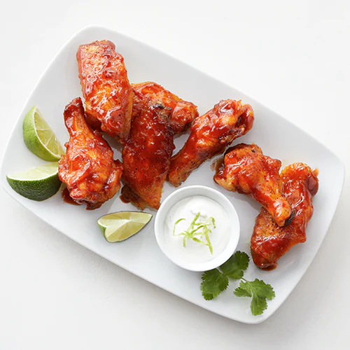

Honey Sriracha Chicken

Description
The heat of Sriracha is paired with the sweetness of honey… making these chicken wings a guaranteed WOW!
Ingredients:
- 3 pounds fresh chicken wings
- 1 1/4teaspoon salt
- 1/2 teaspoon pepper
- 1/3 cup Sriracha hot sauce
- 1/4 cup plus 1 Tbsp. Honey
- 2 cloves garlic, finely chopped
- one cup sour cream
- 1 tablespoon fresh lime juice
- 2 teaspoons lime zest
Steps
- Set oven to Broil. Line a large rimmed sheet pan with foil; place a large rectangular wire rack on top; spray both with cooking spray.
- Place chicken pieces in a single layer on rack; sprinkle 1 tsp. salt and pepper over chicken. Broil 3” from heat 10-12 minutes or until browned, turning halfway through broiling time.
- Spray 3 ½-4 quart slow cooker with cooking spray. Place chicken in slow cooker. In small bowl mix hot sauce, ¼ cup honey, and garlic until well blended. Pour over chicken, stir to coat.
- Cover; cook on Low heat setting 3 hours. Remove with tongs or slotted spoon; discard cooking liquid. In small bowl, mix sour cream, lime juice, zest and remaining honey and salt until well blended.
- Serve chicken wings with lime sour cream and additional hot sauce, if desired.